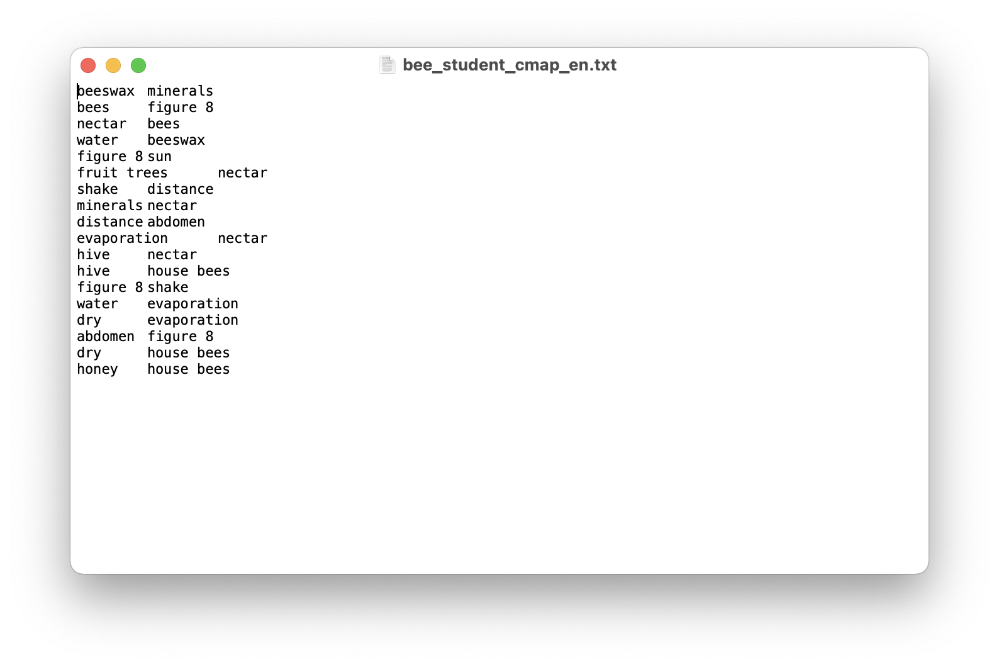
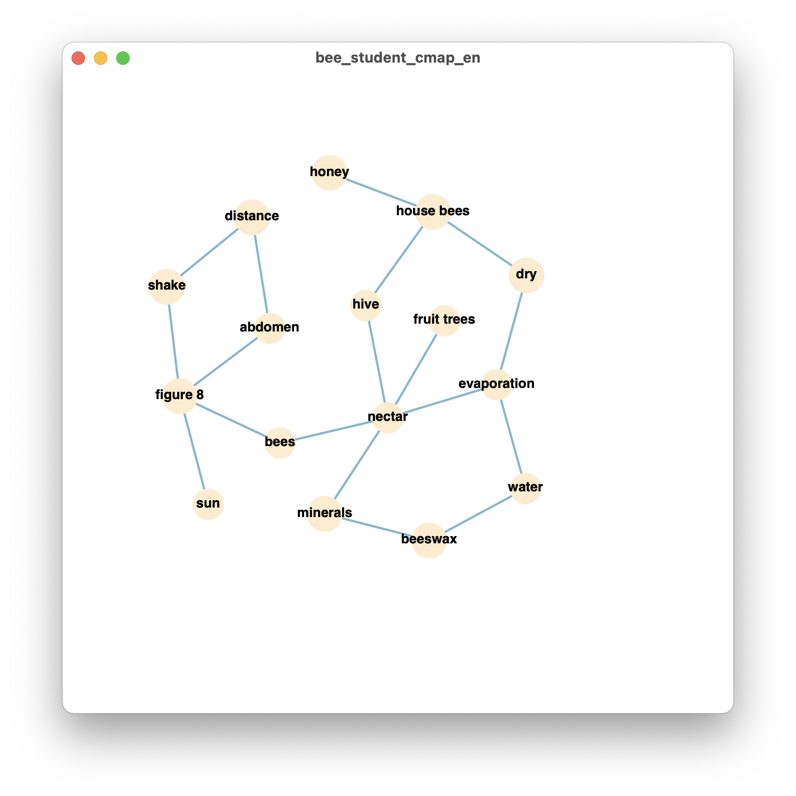

A brief tutorial of cookiemilk
Quickstart
Step 1: load data
For concept map data in proposition format, it should be arranged in a way like this:
beeswax minerals bees figure 8 nectar bees water beeswax ……
Use cmap2graph to load a concept map data of propositions format (i.e., pairs), and convert it into a networkx graph
bees_student = cookiemilk.cmap2graph(filepath='bees_student_cmap_en.txt', data_type='pairs')
For text data, we can load it from a string object directly. Here we use a document derived from the PISA reading test, the title of this document is Collecting Nectar.
text = "Bees make honey to survive. It is their only essential food. If there are 60,000 bees in a hive about one third of them will be involved in gathering nectar which is then made into honey by the house bees. A small number of bees work as foragers or searchers. They find a source of nectar, then return to the hive to tell the other bees where it is. Foragers let the other bees know where the source of the nectar is by performing a dance which gives information about the direction and the distance the bees will need to fly. During this dance the bee shakes her abdomen from side to side while running in circles in the shape of a figure 8. The dance follows the pattern shown on the following diagram. The diagram shows a bee dancing inside the hive on the vertical face of the honeycomb. If the middle part of the figure 8 points straight up it means that bees can find the food if they fly straight towards the sun. If the middle part of the figure 8 points to the right, the food is to the right of the sun."
text = text.replace('honeycomb', 'hive') # replace synonym: honeycomb --> hive
keyterms = ['beeswax', 'sun', 'nectar', 'house bees', 'water', 'distance',
'hive', 'shake', 'honey', 'abdomen', 'figure 8', 'minerals',
'bees', 'evaporation', 'dry', 'fruit trees']
Now we can convert it into a networkx graph by using text2graph.
bee_text = cookiemilk.text2graph(text, keyterms, read_from_file=False)
We can do the same thing for a student’s summary of the text.
text_student = 'Bees make honey to survive. It is their only essential food. If there are 60,000 bees in a hive about one third of them will be involved in gathering nectar which is then made into honey by the house bees. A small number of bees work as foragers or searchers. They find a source of nectar, then return to the hive to tell the other bees where it is. Foragers let the other bees know where the source of the nectar is by performing a dance which gives information about the direction and the distance the bees will need to fly. During this dance the bee shakes her abdomen from side to side while running in circles in the shape of a figure 8. . If the middle part of the figure 8 points straight up it means that bees can find the food if they fly straight towards the sun. If the middle part of the figure 8 points to the right, the food is to the right of the sun. The distance of the food from the hive is indicated by the length of time that the bee shakes her abdomen. If the food is quite near the bee shakes her abdomen for a short time. If it is a long way away she shakes her abdomen for a long time. When the bees arrive at the hive carrying nectar they give this to the house bees. The house bees move the nectar around with their mandibles, exposing it to the warm dry air of the hive. When it is first gathered the nectar contains sugar and minerals mixed with about 80% water. After ten to twenty minutes, when much of the excess water has evaporated, the house bees put the nectar in a cell in the honeycomb where evaporation continues. After three days, the honey in the cells contains about 20% water. At this stage, the bees cover the cells with lids which they make out of beeswax. At any one time the bees in a hive usually gather nectar from the same type of blossom and from the same area. Some of the main sources of nectar are fruit trees, clover and flowering trees. '
text = text.replace('honeycomb', 'hive') # replace synonym: honeycomb --> hive
keyterms = ['beeswax', 'sun', 'nectar', 'house bees', 'water', 'distance',
'hive', 'shake', 'honey', 'abdomen', 'figure 8', 'minerals',
'bees', 'evaporation', 'dry', 'fruit trees']
bee_student = cookiemilk.text2graph(text_student, keyterms, read_from_file=False)
And we can also import a concept map data, for example, from a file like this. 
Here is the codes.
bee_cmap = cookiemilk.cmap2graph(file='.../bee_student_cmap_en.txt', data_type='pair')
Step 2: Do some calculations
For example, we can calculate the propositional similarity between bee_text and a student’s summary of the text (let’s call it bee_student) by using calc_tversky.
cookiemilk.calc_tversky(bee_text, bee_student, comparison='propositional', detailed=True)
And here is what we got.
Calculating Tversky's similarity in ratio scales
s = (set1 - set2)/[(set1 - set2) + alpha*(set1 - set2) + beta*(set2 - set1)]
alpha=0.5, beta=0.5
for more information, please see references below:
Tversky, A. (1977). Features of similarity. Psychological Review, 84(4), 327–
352. https://doi.org/10.1037/0033-295X.84.4.327
Pirnay-Dummer P., Ifenthaler D. (2010) Automated Knowledge Visualization and
Assessment. In: Ifenthaler D., Pirnay-Dummer P., Seel N. (eds) Computer-Based
Diagnostics and Systematic Analysis of Knowledge. Springer, Boston, MA.
https://doi.org/10.1007/978-1-4419-5662-0_6
set1 & set2: [['honey', 'bees'], ['shake', 'abdomen'], ['hive', 'bees'], ['house bees', 'honey'], ['sun', 'bees'], ['figure 8', 'bees'], ['abdomen', 'figure 8'], ['nectar', 'distance'], ['nectar', 'honey'], ['nectar', 'hive'], ['sun', 'figure 8'], ['house bees', 'bees'], ['distance', 'bees'], ['nectar', 'bees'], ['shake', 'bees']]
value of set1 & set2: 15
set1 - set2: [['hive', 'figure 8']]
value of set1 - set2: 1
set2 - set1: [['beeswax', 'bees'], ['nectar', 'minerals'], ['water', 'bees'], ['nectar', 'fruit trees'], ['hive', 'shake'], ['distance', 'hive'], ['water', 'minerals'], ['water', 'honey'], ['nectar', 'house bees'], ['house bees', 'water'], ['sun', 'distance'], ['abdomen', 'bees'], ['honey', 'evaporation'], ['nectar', 'dry'], ['hive', 'dry']]
value of set2 - set1: 15
similarity = 15/(15 + 0.5*1 + 0.5*15)=0.6521739130434783
Well, the propositional simialrity between the text and this student’s summary is 0.65.
Step 3: Visualization
Use function draw to show graph, it would draw graph using D3.js, and display it by pywebview.
cookiemilk.draw(bee_cmap)
result: 